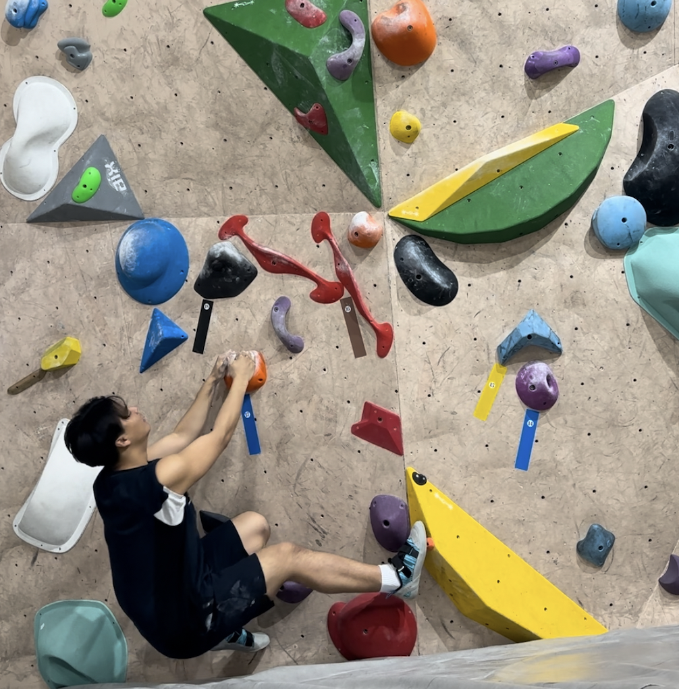
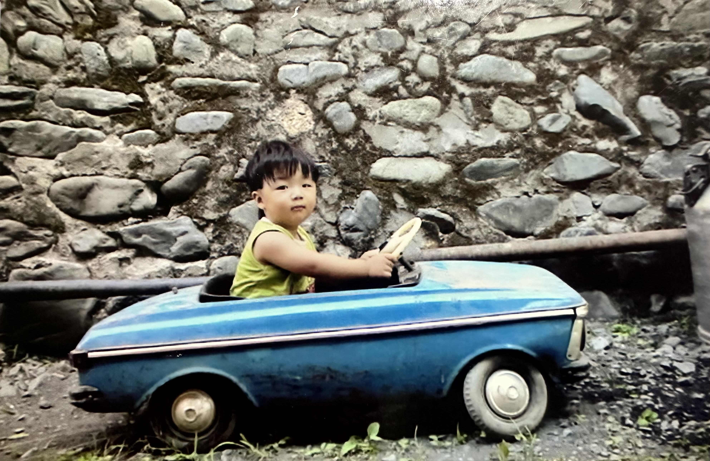
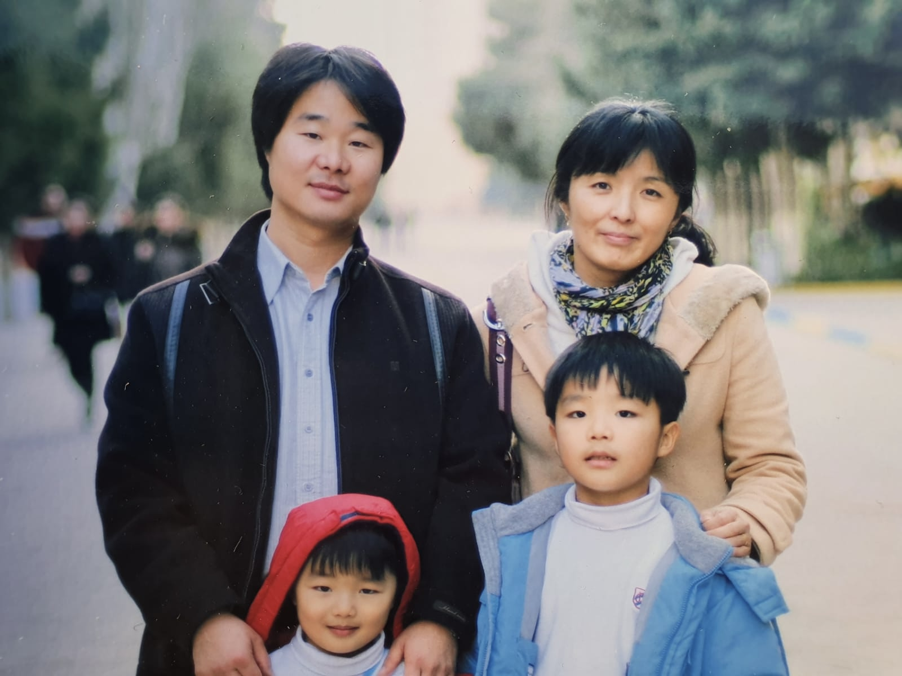

About Simon / Seungchan Park
Hello! My name is Simon. I am 21 years old and I am from Korea.
I spent 15 years living in Azerbaijan, which gave me a unique perspective on different cultures.
I graduated from Handong International School and am excited to share my interests!
My Interests
I enjoy both indoor climbing and judo. These sports challenge me physically and mentally, helping me build strength, focus, and resilience.



My Favorite Athlete